품질경영산업기사 (2019-09-21 기출문제)
1과목: 실험계획법
1. 반복수가 일정한 1요인 모집모형에서 수준 I의 모평균에 대한 100(1-a)%구간 추정식으로 맞는 것은? (단, Ve 오차항의 자유도, Ve는 평균제곱오차이고 m은 반복수이다.)
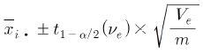
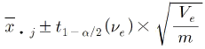
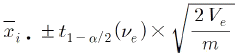
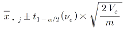
(정답률: 57%)
2. 반복수가 일정하지 않은 모수모형의 1요인 실험에 관한 설명으로 틀린 것은?
- 총 제곱합의 자유도는 총 실험수에서 1을 뺀 값이다.
- 반복이 달라도 실험은 완전 랜덤하게 행하여야 한다.
- 반복이 달라도 요인의 자유도는 요인수 -1로 변함이 없다.
- 반복수가 일정한 실험을 행하다가 일부실험을 실패한 경우도 해당되다.
(정답률: 52%)
3. 표준 직교배열표를 이용하는 실험의 특징으로 틀린 것은?
- 실험을 하는 경우 교호작용이 있을 때는 사용하지 못한다.
- 실험 데이터의 해석이 용이하며, 분산분석의 작성이 쉽다.
- 실험의 크기를 확대시키지 않고도 실험에 많은 요인을 짜 넣을 수 있다.
- 기계적인 조작으로 이론을 모르고도 교락법, 분할법, 일부 실시법 등의 배치를 쉽게 할 수 있다.
(정답률: 62%)
4. 요인 선정 시 계량치 데이터인 것은?
- 온도
- 촉매의 종류
- 결점수
- 원료의 종류
(정답률: 62%)
5. 요인 A가 4준수, 요인 B가 5수준인 반복이 없는 2요인 실험에서 결측치가 1개 있을 때 총 자유도는? (단, 요인 A와 B는 모수모형이다.)
- 14
- 15
- 18
- 19
(정답률: 58%)
6. L8(27)에서 4개의 요인 A, B, C, D를 다음과 같이 배치하였다면 5열에서 교락되는 2요인 교호작용은?
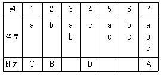
- A×B, B×C
- A×B, C×D
- A×C, B×D
- A×D, B×C
(정답률: 60%)
7. 실험의 배치에 관한 설명으로 틀린 것은?
- 완전 임의 배열법을 교락의 위험이 없다.
- 난괴법은 블록(Block) 내에서 랜덤화를 하는 것이다.
- 라틴방격법은 교호작용이 있는 실험에 부적당하다.
- 반복없는 2요인 실험에서 결측치가 2개 존재하면, 결측치를 추정할 수 없다.
(정답률: 51%)
8. 다음 데이터는 x에 대한 y의 회귀직선관계를 구하기 위한 일부의 값이다. y의 총제곱합에 대한 회귀에 의한 제곱합의 정도(기여율)는 약 얼마인가?
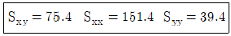
- 26.0%
- 49.8%
- 93.5%
- 95.3%
(정답률: 45%)
9. 요인 A는 4수준, 요인 B는 3수준인 반복이 없는 2요인 실험으로 얻어진 데이터에서 요인 A인 제곱합은 180, 요인 B의 제곱합은 120, 그리고 오차항의 제곱합이 24일 때 요인 A의 유의성을 검정하기 위한 검정통계량의 값은 얼마인가?
- 4
- 15
- 60
- 180
(정답률: 52%)
10. 반복이 있는 2요인 실험(모수모형)에서 다음의 분산분석표를 얻었다. 빈칸 ㉠과 ㉡에 들어가야 할 값이 바르게 짝지어진 것은?
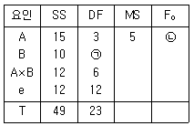
- ㉠ 1, ㉡ 2.5
- ㉠ 2, ㉡ 2.5
- ㉠ 1, ㉡ 5.0
- ㉠ 2, ㉡ 5.0
(정답률: 52%)
11. 변량모형에 대한 설명으로 틀린 것은?
- 각 수준은 실험자가 조절할 수 없다.
- 각 수준의 랜덤하게 선택된 것을 사용한다.
- 요인의 각 수준에서 모평균을 추정하기 위해 사용된다.
- 주로 각 수준 간에 산포의 정도를 파악하기 위해 사용한다.
(정답률: 56%)
12. 데이터의 구조식이 xilk=μ+ai+bj+ck+eijk인 실험계획에 해당되는 것은?
- 난괴법
- 1요인 실험
- 라틴방격법
- 2요인 실험
(정답률: 58%)
13. 4대의 기계에 제품을 각 100개씩 만들어, 적합품이면 0, 부적합품이면 1의 값을 주기로 하였다. 그 결과가 다음 표와 같을 때 오차항의 제곱합(Se)은 얼마인가?
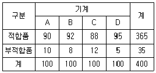
- 0.20
- 31.67
- 32.56
- 32.76
(정답률: 47%)
14. 일반적으로 농사 실험에 많이 이용되는 난괴법의 구조모형은?
- 요인모형
- 모수모형
- 혼합모형
- 변량모형
(정답률: 57%)
15. A는 4수준, B는 3수준의 2요인 실험에서 아래의 데이터가 얻어졌다. A요인의 제곱합(SA)을 구하면 약 얼마인가?
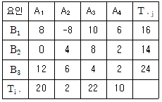
- 14.08
- 86.33
- 220.33
- 243.02
(정답률: 50%)
16. 3수준의 공정온도(A)에서 수율을 각각r=4회 반복 측정하여 총제곱합 ST=480, 공정온도에 의한 제곱합 SA=420을 얻었다. 오차항의 분산 σ2e의 추정치는 얼마인가?
- 4.84
- 6.67
- 9.63
- 10.25
(정답률: 54%)
17. 2요인 실험에 관한 설명으로 맞는 것은? (단, r은 처리의 반복수이다.)
- 2요인 실험에서 변량인자의 모평균 추정은 의미가 없다.
- 요인 A, B가 모두 모수인 반복 있는 2요인 실험에서 교호작용이 유의하다면
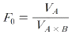
가 된다. - 반복 있는 모수모형이면 요인 A의 특정 수준에서의 모평균 신뢰구간을 구할 때 유효반복수는 1/r가 된다.
- 반복 없는 모수모형이면 요인의 구간추정은 분산분석표의 F검정으로부터 유의하지 않아도 행하여야 한다.
(정답률: 49%)
18. A가 4수준, B가 3수준이고, 반복 2회인 모수모형 2요인 실험의 분산분석 결과, A요인과 B요인은 유의하고, 교호작용이 유의하지 않은 경우 A, B요인의 수준조합에서 구간추정을 하고자 할 때 유효반복수(ne)는?
- 1/4
- 2
- 3
- 4
(정답률: 45%)
19. 3×3 라틴방격법으로 실험한 결과
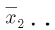
=5.4 Ve=3인 경우, A2수준에서 모평균의 95% 신뢰구간은 약 얼마인가? (단, t0.975(2)=4.303이다.)- 5.4±1.588
- 5.4±1.742
- 5.4±2.428
- 5.4±4.303
(정답률: 55%)
20. 다음은 반복수가 일정하지 않은 1요인 실험의 데이터 일부이다. 그리고 분산분석 결과 Ve=0.⑤1이었다. μ(A2)를 신뢰수준 95%로 구간추정하면 약 얼마인가? (단 t0.95(9)=1.833, t0.975(9)=2.262이다.)
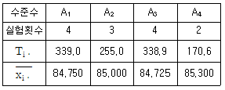
- 84.750≤μ(A2)≤85.295
- 84.745≤μ(A2)≤85.255
- 84.761≤μ(A2)≤85.239
- 84.793≤μ(A2)≤85.207
(정답률: 45%)
2과목: 통계적품질관리
21. H사이에서 생산하는 강철봉의 두께가 종전에는 평균 2.80cm, 표준편차 0.20cm인 정규분포를 따르던 것으로 알려져 있다. 그러나 현재 생산되는 강철봉의 두께는 종정보다 얇아졌다는 정보가 있어 25개의 강철봉을 구입하여 두께를 측정하여 구한 시료평균이 2.73cm로 검정 결과 강철봉의 두께는 평균값이 작아졌다는 것이 유의수준 5%로 입증이 되었다. 이때 모평균의 95% 신뢰한계는 얼마인가? (단, 강철봉 두께의 산포는 검정을 통해 변화하지 않았다는 것이 입증되었다.)
- 2.789cm
- 2.796cm
- 2.804cm
- 2.872cm
(정답률: 29%)
22. OC곡선에서 소비자 위험이 증가하는 샘플링 방벙은? (단, 로츠의 크기는 샘플의 크기에 비해 충분히 크다.)
- 로츠의 크기를 작게 한다.
- 표본의 크기를 크게 하고, 합격판정 개수를 작게 한다.
- 표본의 크기를 작게 하고, 합격판정 개수를 크게 한다.
- 표본의 크기는 크게 하고, 합경판정 개수는 그대로 한다.
(정답률: 56%)
23. 계수형 관리도에 해당하는 것은?
- c 관리도
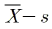
관리도- X 관리도
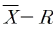
관리도
(정답률: 58%)
24. 최근 연속해서 제출된 5로트에 대하여 다음의 결과가 나왔다. 공정평균 부적 합품률을 추정하면 약 얼마인가?
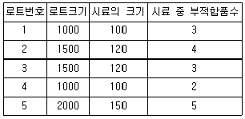
- 1.45%
- 2.88%
- 3.23%
- 4.66%
(정답률: 44%)
25. 확률변수
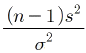
은 어떤 분포를 따르는가?- t분포
- F분포
- X2분포
- 정규분포
(정답률: 52%)
26. 변동계수에 대한 설명으로 맞는 것은?
- 각 집단의 표준편차를 평균으로 나눈 값
- 각 자료들의 값에서 평균을 뺀 값을 표준편차로 나눈 값
- 각 자료들의 값에서 평균을 뺀 값의 제곱의 합을 사례수로 나눈 값
- 산술평균에서 각 자료들의 값에 이르는 거리의 제곱을 평균하여 다시 제곱근을 구한 값
(정답률: 44%)
27. 공정이 이상상태일 경우에는 관리도에서 가능한 한 빨리 이상신호를 줄 수 있어야 한다. 이상신호를 보다 빨리 줄 수 있는 방법으로 틀린 것은?
- 관리한계선을 더 넓게 한다.
- 표본주출 간격을 짧게 한다.
- 각 군의 시료의 크기를 크게 한다.
- X관리도 보다
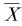
관리도를 사용한다.
(정답률: 45%)
28. 샘플의 크기 5, 군의 수 25에 대해
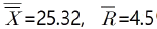
이다.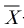
관리도의 UCL은 약 얼마인가? (단, n=4 일 때 d2=2.⑤9이며, n=5일 때 d2=2.326이다.)- 25.325
- 27.529
- 27.916
- 28.252
(정답률: 42%)
29. 학생 100명을 무작위로 추출하여 조사 한 결과 80여명이 현장근무를 원하였다. 현장근무의 선호율에 대한 95% 신뢰구간을 구하면 약 얼마인가?
- (0.56, 0.78)
- (0.65, 0.85)
- (0.69, 0.84)
- (0.72, 0.88)
(정답률: 44%)
30. M성분의 평균치가 97% 이상인 로트는 합격시키고 94% 이하인 로트는 불합격시키고 싶다. 로트의 표준편차 σ=2.0%, α=0.⑤, β=1.0을 만족하는 시료의 크기 n은 얼마인가? (단, Kα=1.645, Kβ=1.282이다.)
- 4개
- 6개
- 16개
- 36개
(정답률: 37%)
31. 계수형 샘플링검사 절차-제1부 : 로트별 합격품질한계(AQL) 지표형 샘플링검사 방식(KS Q LSO 2859-1:2014)에서 분수 합격판정개수의 샘플링검사 방식에 대한 설명으로 틀린 것은?
- 샘플링 빈도로 적용되는 기준은 1/2,1/3, 1/5이다.
- 샘플 중에 부적합품이 전혀 없을 경우, 로트는 합격으로 한다.
- 품질이 매우 안정된 제품인 경우 초기부터 1/5의 샘플링 빈도를 적용하기도 한다.
- 분수 합격판정개수의 샘플링검사 방식은 소관권한자가 승인했을 때 사용할 구 있다.
(정답률: 47%)
32. 검정의 결과로“유의차가 없다.”고 했을 때, 이것을 바르게 표현한 내용은?
- 유의수준 α로 대립가설이 옳다는 의미이다.
- 유의수준 α로 귀무가설을 기각할 수 없다는 뜻이다.
- 신뢰수준(1-α)로 대립가설이 옳다는 의미이다.
- 유의수준 α로 귀무가설이 옳다고 하기에는 데이터가 부족하다.
(정답률: 38%)
33. 사상 A와 B가 상호 배반사상이고,P(A)=0.5, P(AUB)=0.7이라면 P(B)는 얼마인가?
- 0.1
- 0.2
- 0.3
- 0.5
(정답률: 60%)
34.
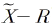
관리도에 관한 내용으로 틀린 것은? (단, 기중값이 주어지지 않는 경우이다.)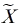
관리도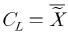
- R 관리도
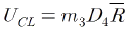
 관리도
관리도 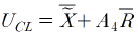
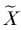
관리도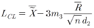
(정답률: 37%)
35. 이항분포에 대한 설명으로 틀린 것은?
- nP=1일 때는 평균치에 대하여 대칭이다.
- P≤0.1이고, nP≥5일 때에는 정규분포에 근사된다.
- P≤0.1이고, nP=0.1~10일 떄에는 푸아송분포에 근사된다.
- 매 시행에서는 두 가지의 사상이 일어나는데, 이 사상들은 서로 독립적이고 배반적이어야 한다.
(정답률: 34%)
36. 직물 100m를 1단위로 25단위를 검사한 결과 총결점수는 191개이다 c관리도의 관리한계는 약 얼마인가?
- LCL=0.65, UCL=15.93
- LCL=5.98, UCL=9.30
- LCL=고려하지않음, UCL=9.30
- LCL=고려하지않음, UCL=15.93
(정답률: 50%)
37. N(100, 52)의 모집단에서 n개의 시료를 뽑을 때 시료평균의 분포가 N(100,12)이 되었다면 시료의 크기(n)는?
- 1
- 5
- 16
- 25
(정답률: 52%)
38. 상관계수에 대한 설명으로 틀린 것은?
- r＞0일 때, 양의 상관관계이다.
- r＜0일 때, 음의 상관관계이다.
- 상관계수(r)은 -1부터 1사이의 값을 가진다.
- 산점도에서 점이 일직선상에 있으면 약한 상관관계가 있다.
(정답률: 57%)
39. 특정 장소에서 검사를 하는 것이 유리하거나, 시험에 특수한 장치가 필요한 경우와 같이 특별한 장소에 물품을 운반해서 검사하는 방법은?
- 공정검사
- 순희검사
- 정위치검사
- 출장검사
(정답률: 44%)
40.
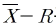
관리도에서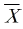
의 변동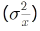
은 군간 변동(σb2)과 군내변동(σω2)으로 표현될 때의 내용으로 틀린 것은? (단, k:군의 수, n:시료의 크기, σH2: 개개 데이터의 산포이다.)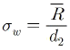
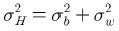
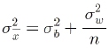
- 완전한 관리상태일 때
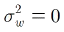
(정답률: 45%)
3과목: 생산시스템
41. 생산라인을 구성하는 각 공정의 능력을 전체적으로 균형되게 하는 것은 무엇이라 하는가?
- Simulation
- PERT/CPM
- Line Layout
- Line Balancing
(정답률: 63%)
42. 표준시간 설정에 관한 설명으로 맞는 것은?
- 표준시간은 정미시간을 의미한다.
- 정미시간에는 여유시간이 포함된다.
- 표준시간은 정미시간에 여유시간을 부가하여 산정한다.
- 여유는 평가계수의 한 부분이므로 개별적으로 적용은 곤란하다.
(정답률: 53%)
43. 작업관리의 연구범위 가운데 방법연구의 기법이 아닌 것은?
- WS 법
- 공정분석
- 작업분석
- 동작분석
(정답률: 55%)
44. 다음에서 ㉠, ㉡에 해당하는 내용으로 맞는 것은?
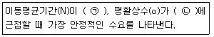
- ㉠:길고, ㉡:0
- ㉠:짧고, ㉡:0
- ㉠:길고, ㉡:1
- ㉠:짧고, ㉡:1
(정답률: 43%)
45. Y제품의 부분품은 연간 총 구입수량이 5000대 이고, 1회 발주비가 100원, 구입단가가 500원, 연간재고유지비율이 0.8일 때 경제적 구입 로트의 크기는?
- 15
- 20
- 25
- 50
(정답률: 36%)
46. 독립수요와 종속수요요의 차이점을 설명한 것으로 맞는 것은?
- 독립수요와 종속수요는 관계가 없다.
- 독립수요와 수요예측으로, 종속수요는 EQQ방식으로 한다.
- 대부분의 종속수요에 대한 예측은 독립수요량에 따라 결정된다.
- 독립수요에 대한 제고문제는 자재소요계획에서, 종속수요에 대한 재고제는 재고관리에서 취급하고 있다.
(정답률: 42%)
47. 생산관리의 기능에 해당하지 않는 것은?
- 동작기능
- 설계기능
- 계획기능
- 통제기능
(정답률: 34%)
48. 설비의 운전부문에서 담당하여야 한 자주 보전 업무로 가장 거리가 먼 것은?
- 사용 중인 설비의 고장수리 작업
- 운전의 일부로 실시되는 자주점검
- 운전의 일부로 실시되는 정비작업
- 운전 중 발견될 수 있는 이상 파악
(정답률: 54%)
49. 동작경제의 원칙 중 모든 공구 및 재료는 지정된 위치에 두어야 한다는 원칙은?
- 설비의 배치에 관한 원칙
- 신체의 사용에 관한 원칙
- 작업장의 배치에 관한 원칙
- 공구 및 설비의 디자인에 관한 원칙
(정답률: 55%)
50. 다음 자료를 이용하여 긴급법률에 의한 작업순서를 바르게 나열한 것은?
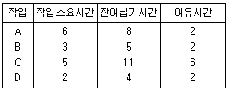
- A→B→D→C
- A→C→B→D
- C→A→B→C
- C→D→B→A
(정답률: 53%)
51. 표준자료법의 특성에 관한 설명 중 맞는 것은?
- 레이팅(rating)이 필요하다.
- 표준시간이 정도가 뛰어나다.
- 제조원가의 사전견적이 가증하다.
- 표준자료작성의 초기비용이 저렴하다.
(정답률: 31%)
52. 연간 수요량 R, 회당 발주량은 Q라고 EOQ모델에서 단위기간당 평균 재고량은?
- Q
- Q/2
- R/Q
- Q/R
(정답률: 40%)
53. JIT시스템에서 소로트화의 특징으로 틀린 것은?
- 공간을 최대한 이용할 수 있다.
- 재고유지비용을 절감할 수 있다.
- 간판수와 리드타임을 증가시킨다.
- 공장의 작업부하를 균일하게 한다.
(정답률: 52%)
54. 자재구입 시 가치분석을 이용할 때 기능분석의 단계로 맞는 것은?
- 기능이 정의→기능의 평가→기능의 작성
- 기능의 정의→기능의 작성→기능의 평가
- 기능의 정의→대체안의 작성→기능의 평가
- 기능의 정의→기능의 평가→대체안의 작성
(정답률: 44%)
55. 설비배치의 목적으로 틀린 것은?
- 공간의 효율적 이용
- 운반 및 물자취급의 최소화
- 설비 및 인력의 이용률 최소화
- 공정의 균형화와 생산흐름의 원활화
(정답률: 61%)
56. 열화손실을 감소시키기 위한 조치의 설명으로 틀린 것은?
- 정상운전 : 운전자의 훈련과 지도
- 개량보전: 갱신분석의 조직화 실시
- 예방보전 : 주기적 검사와 예방수리의 직정 실시
- 일상보전 : 급유, 교환, 점검, 청소 등의 적정 실시
(정답률: 51%)
57. 일정계획으로부터 생산의 합리화를 위해 고려할 사항이 아닌 것은?
- 작업의용의 고취
- 작업기간의 단축
- 생산활동의 동기화
- 가공로트 수의 대형화
(정답률: 59%)
58. 다음 표는 프로젝트와 관련된 정보이다. 모든 작업을 정규작업에 의해서 행할경우 주경로는 A→C→D→E가 된다. 이 프로젝트를 최소의 비용으로 1일 단축시키기 위해서는 어떤 작업을 단축해야 하는가?
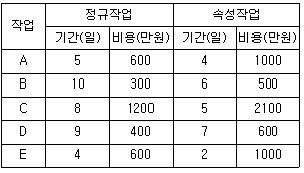
- A
- B
- D
- E
(정답률: 48%)
59. 활동상호관계분석표에서 배치도를 그릴 때 사용하는 접근도 표시방법에 대한 설명 중 틀린 것은?
- 접근도 I를 갖는 활동은 중요함을 나타내며 2선으로 표시한다.
- 접근도 O를 갖는 활동은 보통임을 나타내며 1선으로 표시한다.
- 접근도 A를 갖는 활동을 반드시 인접해 있어야 하며 4선으로 표시한다.
- 접근도 U를 갖는 활동은 중요하지 않음을 나타내며 일점쇄선으로 표시한다.
(정답률: 53%)
60. 프로젝트의 규모가 큰 경우, 생산계획 및 통제의 일정계획 수립에 가장 적합하게 이용될 수 있는 기법은?(오류 신고가 접수된 문제입니다. 반드시 정답과 해설을 확인하시기 바랍니다.)
- 라인밸런싱
- 간트차트
- 동적계획법
- PERT/CPM
(정답률: 38%)
4과목: 품질경영
61. 어떤 조립품의 구멍과 축의 치수가 다음과 같을 때 최대틈새는 얼마인가?
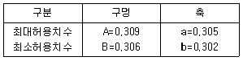
- 0.001
- 0.002
- 0.003
- 0.007
(정답률: 47%)
62. 품질개선활동의 추진방법 중 가장 먼저 실시해야 할 것은?
- 공적해석
- 문제점 파악
- 개선방법의 입안
- 문제점 결정
(정답률: 53%)
63. 사내계측관리 전개방법 중 집중관리방식의 특징이 아닌 것은?
- 관리방법이 통일된다.
- 계측기술의 축적전개가 이룩된다.
- 필요할 때마다 즉시 사용할 수 있다.
- 획일화된 방법이 되고, 쉽고, 복적에 적합하지 못한 경우가 있다.
(정답률: 44%)
64. 신 QC가 7가지 수법이 아닌 것은?
- 친화도법
- 산점도
- 계통도법
- PDPC법
(정답률: 58%)
65. 1980년 중반에 등장한 전략경영 개념은 급변하는 기업환경 속에서 기업이 직면하고 있는 위협과 기회에 조직능령을 대응시키는 의사결정과정이라 할 수 있다. 이러한 전략적 경영을 전개해 가는 3단계에 해당하지 않는 것은?
- 품질의 정의(quality define)
- 평가 및 통제(evaluation control)
- 전략의 형성(strategy formulation)
- 전략의 실행(strategy implementation)
(정답률: 45%)
66. 양 및 단위-제1부 : 일반사항(KS AISO 80000-1:2009)에서 규정하기 SI기본단위에서 기본량과 적용되는 명칭이 틀린 것은?
- 길이-미터(m)
- 전류-암페어(A)
- 광도-칸델라(cd)
- 열역학적 온도-섭씨도(℃)
(정답률: 55%)
67. 카노(kano)의 고객만족모형에서 고객내면에 잠재되어 있는 품질특성으로, 경쟁사에 비교우의를 가져오게 되는 요인은?
- basic quality factors(기본적요인)
- reverse quality factors(역품질요인)
- performance quality factors(성능요인)
- excitement quality factors(고객이 흥분을 느끼는 요인)
(정답률: 43%)
68. 표준화의 역효과가 나타나지 않고 효과적으로 추진해가기 위한 제조공정의 사내표준화 활동으로 틀린 것은?
- 기술 및 관리의 진보와 연동되어 적시에 신속히 개정ㆍ보급될 것
- 조직원이 자율적으로 효과적 방법을 찾아 개선점을 찾을 수 있는 환경을 조성할 것
- 엄수하여야 할 최적조건 및 방법을 관리자 중심에서 최전점을 추구하여 표준화 할 것
- 규격은 반드시 최신본(관리본)으로만 적용될 수 잇도록 규격의 제ㆍ개정 및 폐지 시 배포처와의 관계를 분명히 하여 명확히 처리되도록 할 것
(정답률: 40%)
69. 품질경영의 성과를 여러 가지 관점에서 객관적으로 평가하여 품질보중에 필요한 정보를 파악하기 위해 행하여지는 독립적인 행위를 무엇이라 하는가?
- 품질심사
- 품질관리
- 품질설계
- 품질방침전개
(정답률: 49%)
70. 6시그마 품질경영에 대한 설명으로 틀린 것은?
- 공정능력지수(Cp)=2.0을 목표로 한다.
- 특성값에 대한 규격공차가 표준편차의 12배 크기와 같다.
- 이론적인 상화하에서 예견되는 부적합품률이 3.4ppm이다.
- 설계, 제조, 관리부문 등 모든 조직이 참여하는 총체적인 품질향상 프로그램이다.
(정답률: 43%)
71. 품질경영시스템-요구사항(KS Q ISO 9001;2015)의 부적합 및 시정조치에 관한 내용으로 틀린 것은?
- 불만족은 포함하지 않는다.
- 필요한 경우, 품질경영시스템을 변경할 수 있다.
- 부적합을 관리하고 시정하기 위한 조치를 취해야 한다.
- 시정조치는 직면한 부적합의 영향에 적절하여야 한다.
(정답률: 51%)
72. 제조물책임 방어(PLD:product liablilty defence)의 대책 중 사후대책에 해당하는 것은?
- 책임의 한정
- 초동대책
- 손실의 분산
- 응급체제 구축
(정답률: 42%)
73. 그래프를 그릴 때의 일반적인 주의사항으로 틀린 것은?
- 표제는 반드시, 부제는 필요에 따라서 붙인다.
- 눈금, 눈금숫자, 단위, 항목, 설명문자를 기입해야 한다.
- 그래프에 나타내는 유효숫자는 보통 4자리 이상으로 한다.
- 분류항목에 따라 수량이 적은 것을 모아서 그래프의 끝에 기타로 일괄하여 나타내면 좋다.
(정답률: 50%)
74. 품질비용에 대한 설명으로 틀린 것은?
- 품질지용의 목표는 추진 단계에 따라 차이는 있지만, 궁극적인 목표는 품질향상과 원가절감에 있다.
- 예방비용의 증가가 실패비용과 평가비용의 절감에 비해 클 경우, 품질경영활동이 만족하다는 의미이다.
- 품질비용은 제품이나 서비스의 품질과 관련해서 발생되는 비용으로 이미 산출되었거나 산출될 급부에 관한 개념이다.
- 품질의 경제성 향상과 경제적 품질향상 활동에서 전제되어야 하는 것은 경제성 평가이며, 이의 첫도는 품질비용이라 할 수 있다.
(정답률: 57%)
75. 어떤 제품의 규격이 7.220~8.340이고, n=5, k=20의 데이터를 취해
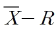
관리도를 작성하였다. 이 때 공정능력을 구하면 약 얼마인가? (단, 관리도는 관리 상태이며,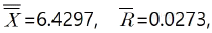
d2=2.326이다.)- 0.024
- 0.070
- 0.094
- 0.154
(정답률: 30%)
76. 전달규격으로 표준화에 속하지 않은 것은?
- 치수
- 단위
- 기호
- 용어
(정답률: 43%)
77. 벤치마킹 기법에 관한 설명 중 틀린 것은?
- 벤치마킹은 프로세스보다는 완제품이나 서비스에 초점이 집중된다.
- 벤치마킹은 경쟁업체 뿐만 아니라 모든 조직을 이해하는 데 사용 가능하다.
- 미국 제록스사의 교육 및 조직개발 전문가 모임에서 용어의 사용을 시초로 본다.
- 벤치마킹이란 지속적인 개선을 달성하기 위한 내부활동 혹은 관리능력을 외부적인 비교시각을 통해 평가하고 판단하는 것이다.
(정답률: 54%)
78. 산업표준화법상 산업표준화의 대상이 아닌 것은?
- 광공업품의 포장의 종류, 형상, 치수
- 광공업품의 생산방법, 설계방법, 사용방법
- 광공업의 기술과 관련되는 용어, 약어, 부호
- 광공업품의 특허 및 제조 비결에 관한 사항
(정답률: 47%)
79. 파이겐바움은 품질관리 부서의 하위기능을 품질관리기술부문, 공정관리기술부문, 품질정보기술부문 등으로 대별하였다. 다음 중 품질관리기술부문의 주요업무라고 볼 수 없는 것은?
- 품질관리계획
- 품질정보의 제공
- 공정검사 및 시험
- 품질비용의 분석
(정답률: 37%)
80. 품질경영시스템-기본사항과 용어(KS Q ISO 9000:2015)에서 용어에 대한 설명으로 틀린 것은?
- 품질관리란 품질 요구사항을 충족하는 데 중점을 둔 품질경영의 일부이다.
- 품질개선이란 품질 요구사항을 충족시키는 능력을 증진하는 데 중점을 둔 품질경영의 일부이다.
- 품질보증이란 품질 요구사항이 충족될 것이라는 신뢰를 제공하는 데 중점을 둔 품질경영의 일부이다.
- 품질기획이란 의도된 결과를 만들어 내기 위해 입력을 사용하여 상호 관련되거나 상호 작용하는 활동의 집합으로, 품질경영의 일부이다.
(정답률: 38%)